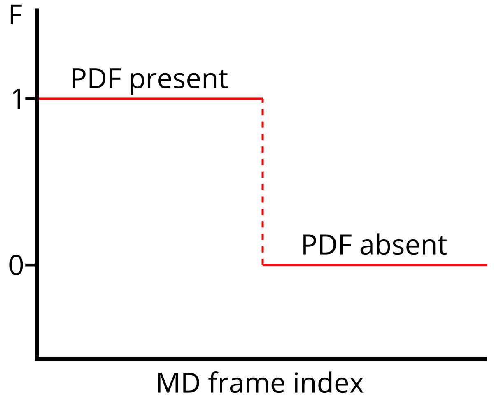

Invited seminar at the Department of Biology and Ecology of the Faculty of Science, University of Ostrava, Czech Republic.
Created using Reveal.js.
Use right arrow for browsing.
Atomistic computer simulations of the ribosome
Michal H. Kolář
@MhkoScience
michal@mhko.science


 19-06479Y, 23-05557S, 23-05764S
19-06479Y, 23-05557S, 23-05764S

Felipe C. Nepomuceno
Michaela Černeková
Hugo McGrath
Tereza Svatoňová
Iva Švecová
Josef Cikhart
Aneta Hrádková
Petr Chalupský
Jan Kejla
Aneta Leskourová
Petr Linhart
Martin Mašek
Jan Michna
Arian Adam Ott
1. Atomistic simulations
2. Ribosome essentials
3. Stalling by VemP
4. Long-range allostery
1. Atomistic simulations
2. Ribosome essentials
3. Stalling by VemP
4. Long-range allostery

„Prediction is very difficult, especially if it’s about the future.“
whiteboard section
1. Atomistic simulations
2. Ribosome essentials
3. Stalling by VemP
4. Long-range allostery
VMD section
1. Atomistic simulations
2. Ribosome essentials
3. Stalling by VemP
4. Long-range allostery


Helmut Grubmüller
Lars V. Bock
Gabor Nagy
Sara M. Vaiana
John Kunkel
Published
Bock et al. PMID: 29202442
Kolář et al. PMID: 35150281
Vibrio alginolyticus
Vibrio Export Monitoring Polypeptide (VemP)
photo courtesy: Dr. Gary Gaugler, Visuals Unlimited, Inc.
VemP
- cryo-EM shows extreme compation in the exit tunnel
- Su et al., PMID: 28556777
- inner helix inactivates two nucleobases needed for peptidyl transfer
VemP Questions
- Why does VemP fold in the tunnel?
- How does VemP respond to external force?
Answers
- The tunnel walls play a decisive role in folding VemP.
- VemP unfolds sequentially from the N-terminus.

1. Atomistic simulations
2. Ribosome essentials
3. Stalling by VemP
4. Long-range allostery
Strategy
- Build systems with and without PDF.
- Using MD simulations generate conformational ensembles.
- Analyze structure and dynamics and search for differences caused by PDF.
Published
McGrath et al., PMID: 36335428Principal Component Regression
A story about stalking a bartender
whiteboard section
Hub, de Groot, PMID: 19714202
Aim: Get a statistical model to predict F.
Atomistic computer simulations of the ribosome
Michal H. Kolář
@MhkoScience
michal@mhko.science
Technical details
- molecular mechanics, Newton's laws
- Amber force field, explicit SPC/E water
- 2M particles
- Gromacs 2020, CPU-only implementation
- 1000 ns/traj, 4 independent trajs/system, 3.3M corehours